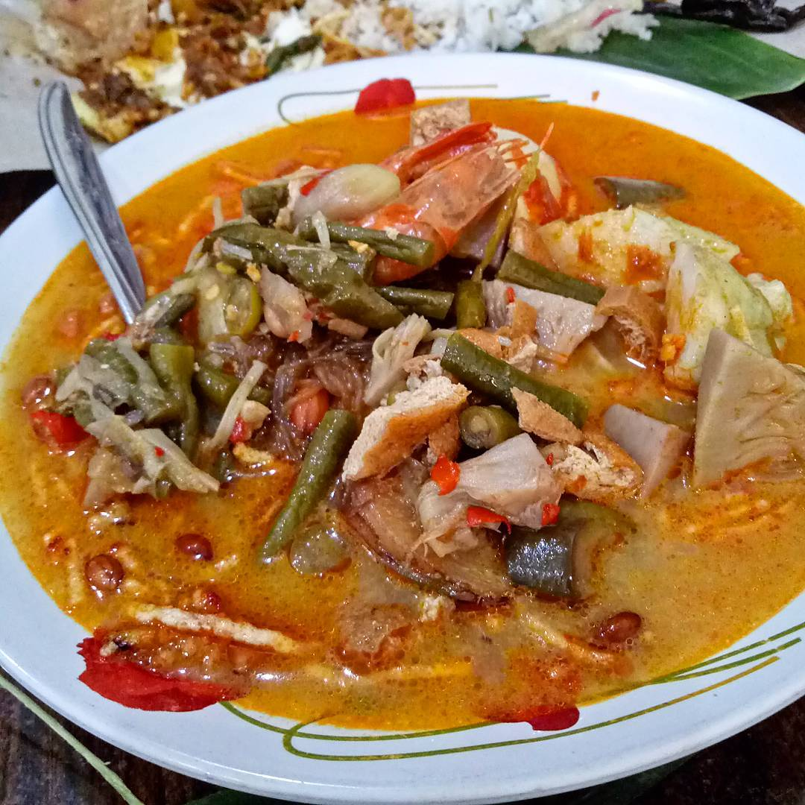

1. Lontong Medan
Lontong Medan usually consists of lontong made of rice, dry chili sauce which is a combination of peanuts, tempeh and anchovies. In addition, Lontong Medan also contains curry from pumpkin vegetable mixed with carrots and long beans.
This special food menu also includes long bean tauco which can be combined with peeled clams or chicken offal, such as chicken liver and intestines cut into small pieces. Some people also like to serve this lontong with noodle sticks cooked with spices and a mixture of cabbage or just boiled. Lontong Medan is also more delicious when added with boiled eggs.
